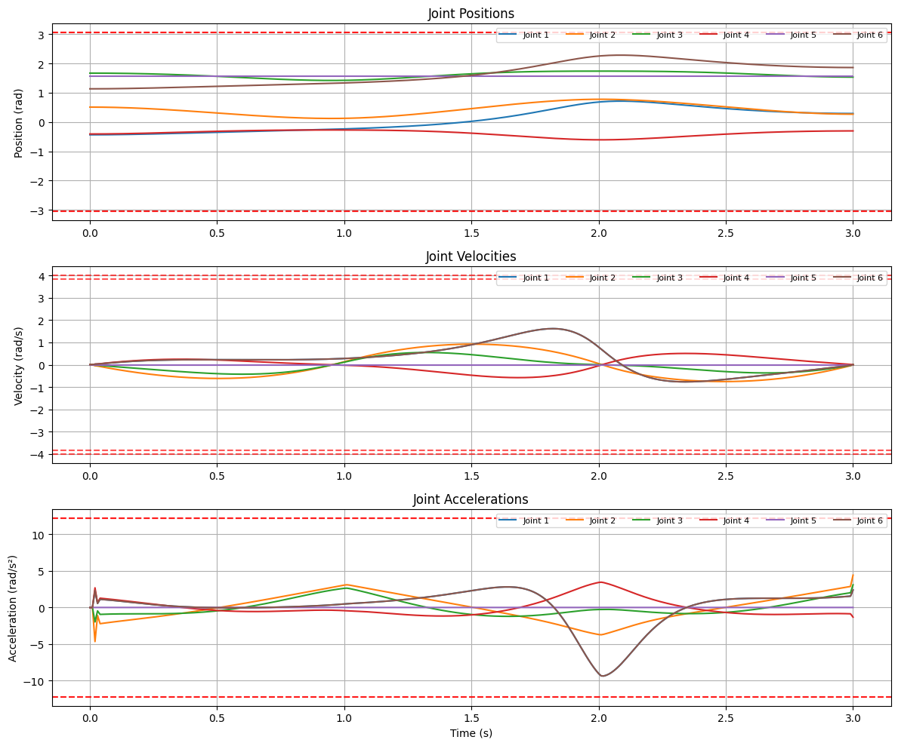
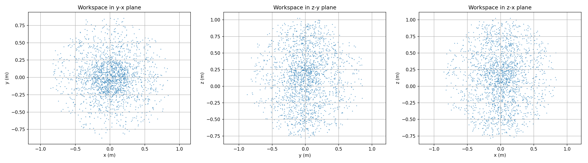

×

Advanced kinematics, motion planning, and trajectory optimization for AUBO i5 collaborative robot
A kinematics and motion planning study for the AUBO i5, a 6-axis collaborative arm. Built forward and inverse kinematics from the robot’s URDF, mapped the reachable workspace, found the singularities that make control unstable, and generated trajectories that respect the joint limits. All in Python.
Forward kinematics from DH parameters, then inverse kinematics for the reverse problem. A 6-axis arm usually has several joint solutions for the same pose, so the solver picks among them using joint limits and the current configuration.
Monte Carlo sampling over thousands of random joint configurations maps what the arm can actually reach, and exposes the singular poses where it loses a degree of freedom and joint speeds blow up.
The manipulator Jacobian converts a desired end-effector velocity into joint velocities. Near a singularity that inverse is badly conditioned, so it needs damping to avoid commanding speeds the motors cannot deliver.
Polynomial interpolation between waypoints, in both joint and Cartesian space, with position, velocity and acceleration kept continuous so the motion is smooth rather than jerky.

